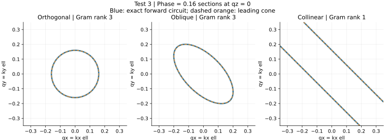
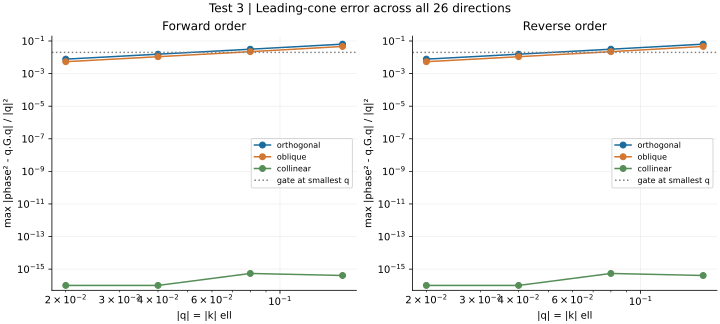
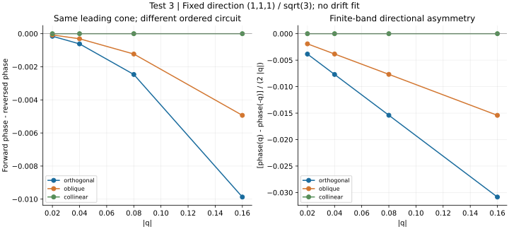
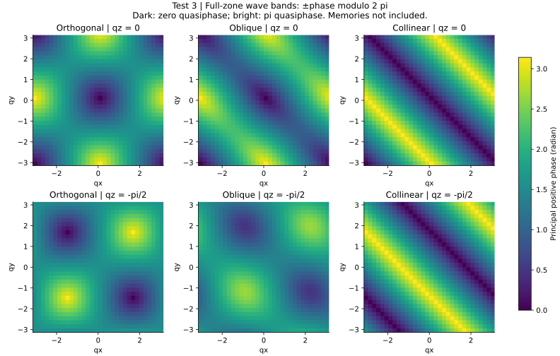
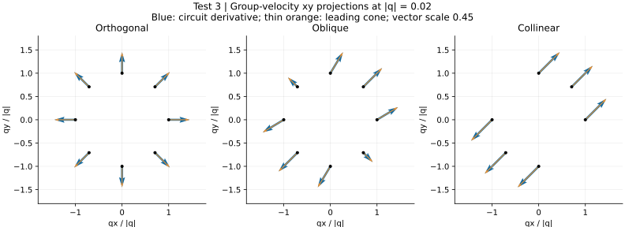
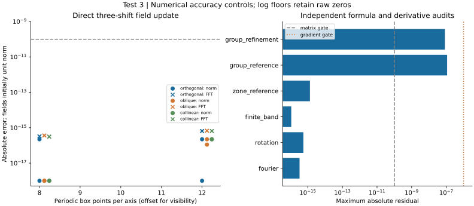

# Signal Space / GROSS Test 3 Technical execution: completed. Scientific classification: pass. The explicit homogeneous router is compared with a derived Gram cone. Incidence and conversion scales are assumed. The complete SS OPS 1 spectrum and autonomous clocks are not measured. Run: run-915ed88048939f8f Analysis: analysis-0001-53e821db Solver commit: 0babae84f204ac6445c5c11a0c8a0e3b0c771817 Config SHA-256: 7540ff4770e1e68b9255e38a7552f5e28c892ad68ecf4a1184e2e1bcadae1f24 Renderer commit: 0babae84f204ac6445c5c11a0c8a0e3b0c771817 Locked checks: coverage: pass; value 624 fourier-circuit: pass; value 6.778545366739879e-16 conservation: pass; value 6.661343625597994e-16 continuum: pass; value 0.007742446435048791 triad-rank: pass; value [3, 3, 1] order-control: pass; value 0.00987207275809493 rotation: pass; value 5.551115123125783e-16 group-refinement: pass; value 1.1180240583330558e-07 full-zone: pass; value 1.3322676295501878e-15 Method: exact displacement-stencil composition; independent matrix exponentials; analytic quaternion product and derivative; periodic real-space updates. All 26 signed axial/oblique directions at |q|=0.02,0.04,0.08,0.16. Three triads, two orders, zone grids 16^3/32^3 and random boxes 8^3/12^3. Error budget: floating-point roundoff, finite-difference group derivatives, finite sampling and contour interpolation. No numerical time integration. Conservation is wave amplitude norm; no physical detector record or mechanical energy-momentum inferred. Next: Test 4 zero-wave complete tangent spectrum, retaining physical stationary memory variations. Only then attempt one bounded self-consistent nonzero periodic background. Strong shared-cone and geometric-wave-plus-material-memory hypotheses remain distinct. ## cone-sections Question: Which projector arrangements yield an isotropic, anisotropic or degenerate cone? Reading: Gram ranks [3, 3, 1]; exact and leading contours are compared at phase 0.16. Rank check: pass. Significance: Independent oblique projectors permit anisotropic propagation; collinear projectors remove two spatial principal directions although the internal matrix algebra is unchanged. Limitation: A qz=0 section, with interpolation, is not a full spatial surface or detector geometry. The routing directions are assumed. ## continuum-convergence Question: Does the actual circuit approach its predicted cone as wavelength grows? Reading: Largest fine-radius residual 0.00774245; worst adjacent fine/coarse ratio 0.497147. Continuum check: pass. Significance: Shrinking finite-band error tests the derived Gram cone without fitting it to the measured dispersion. Limitation: Four radii and 26 directions; this is a linear wave-sector limit, not a complete coupled-system continuum limit. Collinear roundoff values are not fitted. ## order-and-direction Question: Is opposite-direction asymmetry a finite-band order effect or leading drift? Reading: Order-control status: pass; independent-triad minimum of maximum order differences 0.00987207 rad. Opposite-direction odd phase is divided by |q| to expose any leading term. Significance: The signed triple-sine term can generate directional asymmetry while the leading generator stays traceless. Order is physical incidence data. Limitation: No leading-drift fit or invariant detector record is measured. Other backgrounds and modified routing laws remain open under Test 11. ## full-zone-spectrum Question: What additional low and pi-quasifrequency modes are hidden outside the origin? Reading: The full-zone check is pass. Grid counts and exact corner/half-pi node probes are saved. The orthogonal circuit has zero and pi nodes away from the origin. Significance: The near-origin Weyl cone cannot be interpreted as a unique physical species from the long-wavelength calculation alone. Limitation: Finite grid inspection does not prove all nodes were found or measure topological charges. Negative wave bands are given by sign reversal; physical memory branches require Test 4. ## group-directions Question: Does the energy-transport direction follow the wavevector in the oblique case? Reading: Derivative audit: pass. Maximum analytic-reference error 1.12e-07; step-halving difference 8.39e-08. Collinear nodal directions have no arrows. Significance: Oblique projector geometry can direct group transport away from the wavevector direction without requiring several metrics. Limitation: These are spectral group derivatives, not tracked wave packets. Arrows project onto xy and exclude touchings; full components remain in saved data. ## numerical-audit Question: Do explicit port shifts conserve amplitude and agree with the independent Fourier reference? Reading: Fourier-circuit: pass; conservation: pass; common rotation: pass. Both box sizes and both block orders are included. Significance: Independent real-space shifts and exponential/quaternion references test signs, order, amplitudes and global basis covariance. Limitation: Periodic boxes check implementation and norm only. There is no PDE timestep or outgoing boundary; no energy-momentum or nonlinear conservation claim follows.





